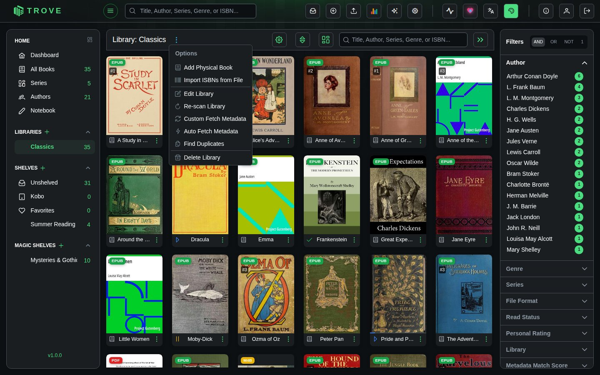
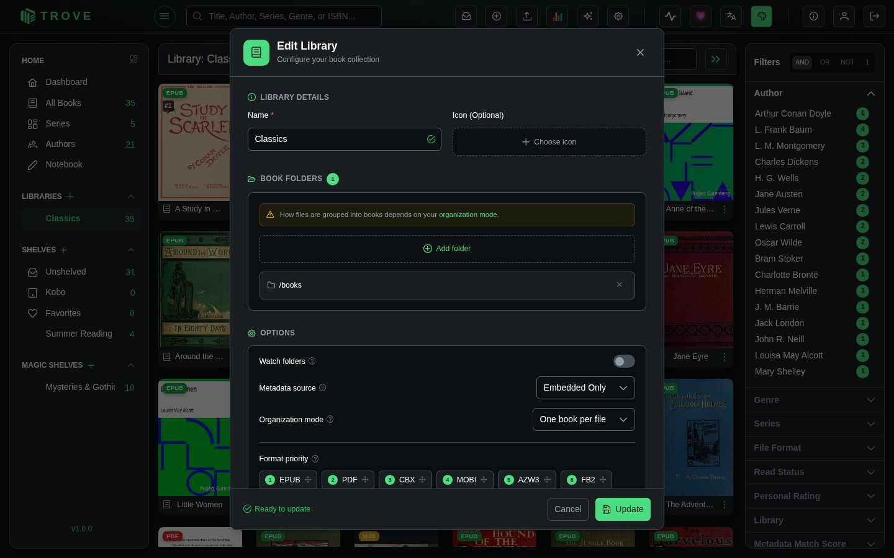
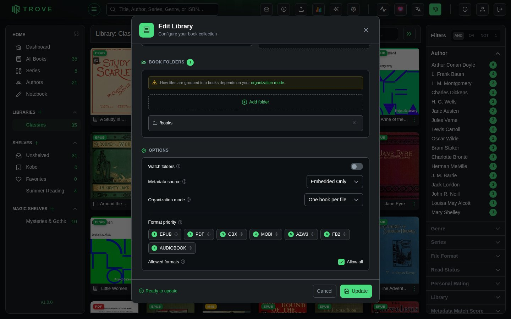

Managing libraries
Each library has a menu for changing its settings, re-scanning its folders, fetching metadata, finding duplicates, adding books without files, or deleting it.
The library menu
Open a library and click the ⋮ beside its name in the header.

| Item | What it does |
|---|---|
| Add Physical Book | Adds a book you own on paper, with no file. See Physical books. |
| Import ISBNs from File | Adds physical books in bulk from a list of ISBNs. |
| Edit Library | Opens the library's settings (below). |
| Re-scan Library | Checks every folder again for new, changed and removed books. |
| Custom Fetch Metadata | Looks up details for every book, with a choice of sources and fields. |
| Auto Fetch Metadata | Looks up details for every book using your usual settings. |
| Find Duplicates | Looks for the same book more than once. See Duplicate detection. |
| Delete Library | Removes the library from Trove (see below). |
Which items you see depends on your permissions.
Edit Library
The same dialog you created the library with. You can rename it, change its icon, add or remove folders, and change the options. The organization mode is fixed once the library exists. A folder you add can't overlap another library's folders, the same rule as when creating a library; folders already saved aren't checked again, so an older overlap doesn't stop you renaming the library.



Unticking a format under Allowed formats stops Trove picking those files up in later scans; the dialog tells you how many books that affects.
Re-scan Library
After you confirm, Trove goes through the library's folders and brings the library up to date: new books are added, changed files are read again, and books whose files have gone are removed. You'll want this when Watch folders is off, or after changing a lot of files at once. Progress shows in the activity panel.
Fetching metadata for a whole library
Auto Fetch Metadata looks every book up with the sources and field rules from Metadata settings and Library metadata. Custom Fetch Metadata asks first which sources and fields to use and whether to replace what's there. Both run as background tasks you can follow in the activity panel and in Tasks; on a large library they take a while, as the sources are asked politely one book at a time.
Delete Library
Removes the library, its books' records, reading progress on them, and their cover images from Trove. Your book files are not touched: they stay in their folders, and you can add the folders to a library again later (reading history won't come back).